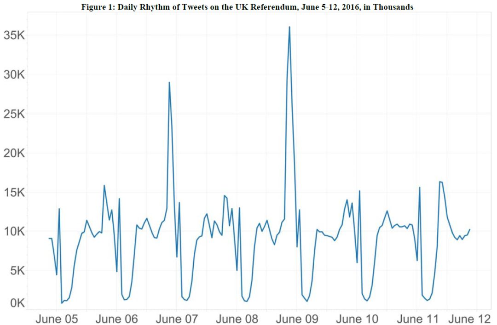
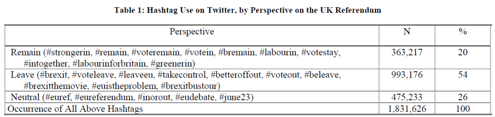
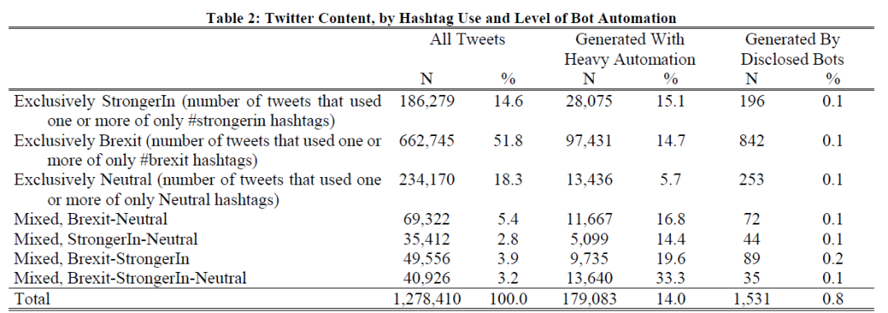

收录于合集
文献来源：Howard, P. N., & Kollanyi, B. (2016). Bots,# StrongerIn, and# Brexit: computational propaganda during the UK-EU referendum. Available at SSRN 2798311.
作者简介：Philip N. Howard，牛津大学社会学、信息学和国际事务教授，互联网研究所主任，研究领域为信息技术与政治参与、社会控制；Bence Kollanyi，布达佩斯考文纽斯大学社会学博士候选人，研究兴趣为社交媒体与计算宣传。
一、导言
机器人账号（Bot Account，又叫做僵尸账号）是社交媒体中的常见元素。那么在社交媒体的政治议题讨论中，应该如何识别出僵尸账号，僵尸信息又在互联网信息中占据多大比例呢？作者针对Twitter中的脱欧议题对该问题进行分析，发现僵尸水军在英国脱欧的推文中做了一点微小又具战略性的工作：第一，在有关脱欧的推文中，主题标签（Hashtag）呈家族式聚集。第二，脱欧议题的不同立场中的僵尸账户比例也不同。第三，社交媒体脱欧议题中三分之一的信息由占所有账号不到1%的僵尸账号所创作。
二、 从普通僵尸账号到政治话题僵尸账号
世界上越来越多的政府与政客使用僵尸账号来参与线上政治话题的讨论。普通僵尸账户的功能多样，包括正当用途，比如进行网络人口普查的“Carna botnet”；以及不正当的用途，比如造谣洗地、DDoS攻击等。僵尸账号在推特中相当流行，这些账号通常缺乏基本的用户信息，人称“推特蛋”（因为推特用户的默认头像是一颗蛋，即本文封面图）。
僵尸账户具有功能多样、价格低廉且迭代速度快的特点，各国政府、政客开始使用僵尸账户来操纵民意、搅和政治议题的讨论。政治僵尸账户倾向于在民意极化的敏感政治时期进行开发、部署。对于英国脱欧公投这个政治讨论中，机器人账户又是如何被应用的呢？
三、 推特中的僵尸账户与政治传播
在许多政治危机中，推特成为了一种强有力的交流工具。在近期的墨西哥扫毒战争中，政府军和贩毒集团双方谁也没想到战争会变成推特的线上直播。推特不能直接铸剑为犁、阻止战争，但可以帮助人们思考如何应对战争。尽管许多人对推特上信息的质量表示质疑，但推特确实是一种表达选民实时民意的有效工具。在英国脱欧议题中，脱欧派和留欧派都发动了许多僵尸账户参与讨论，比如@ivoteLeave 和@ivotestay，这些账号通常被开发出用来重复某些特定的内容，即“复读机”。有趣的是，僵尸账户也会跨界打call，比如@Col_Connaughton这个在巴以问题中用来支持巴勒斯坦一方的机器人，也在转发支持英国脱欧的推文。
四、 抽样与方法
通过脱欧、留欧、中立三种类型的主题标签，作者收集了2016年6月5日至12日的150万条推文、313832个推特账户，下图呈现了所收集推文的发推规律。

作者所使用的收集方法是推特官方提供的Streaming API，其收集方法是通过一系列主题标签进行搜索，但抽样方法是黑箱，请求返回的推文是世界范围内实时发送的1%推文。而使用这种收集方法的优势是所收集的数据几乎都与脱欧议题相关，Streaming API返回四类推文：包含所搜索主题标签的推文与转推，以及不包含所搜索主题标签，但是url超链接中包含该标签的推文与转推。比如：
“Ask Sam to get your stuff packed
then, @David_Cameron
https://t.co/ysoqi9MoQ0”
该推文没有包含任何一个作者所搜索的标签，但是url超链接中包含了使用#voteleave的文章。
五、 分析与本文发现
首先，作者通过数据集中某一用户使用特定标签的频率来确定其在脱欧议题中的立场，表一呈现了留欧派用户使用频率最高的前十名标签和脱欧派用户使用频率最高的前十名标签。在标签的计数上，对于一条推文中如果同时使用了多个标签，则该推文都会被重复计入所属标签类别中。该方法的缺陷是不包含在作者这一标签列表中的推文都不会被纳入计数。而#brexit标签则反映了推文标签使用的复杂性——留欧派和脱欧派双方都频繁使用了这个标签。脱欧派使用率次高的标签#voteleave（341839次）仍是留欧派最常使用的标签#StrongIn（110653次）的三倍之多。
并且，本文分析发现脱欧派的推文内容更长、更善于使用主题标签将自身推文与其他脱欧派的推文相关联。

第二，为了评估僵尸账号在脱欧议题讨论中的作用，作者基于主题标签将推文进行了分类，并且在每一类中细分出高度自动化账户（即僵尸账户）的子集，如表二所示。

这些高度自动化的账户通常是由工作人员在算法辅助下工作，作者将“高度自动化”定义为每天至少发布50条推文的账户，并且作者也承认了将推特重度用户误判为机器人的可能性。最后作者还将账户描述中含有“bot”一次的划分为“Disclosed Bots"子集。
第三，为了了解推特用户中推文生产的分布，本文分析了主题标签的流量分布，发现前100名用户在一周内生产了超过120000条推文，约占推特脱欧议题所有流量的8%。而最活跃的1%用户产生的流量则占到了脱欧议题的32%。
并且该表格也表明，脱欧议题不同立场的推文中，僵尸账户比例也不同。在中性主题标签推文中，仅有5.7%的推文为僵尸账户所发送；相较之下同时使用所有主题标签的混合推文中，僵尸账户比例大约为33%。
最后，为了评估僵尸账户在推特脱欧议题中的作用，本文分析了排名前10的账户，确定了前10中有7个账户为僵尸账户，并且这些账户只会转推，并不会发布原创推文。
六、结论
在英国脱欧公投前一周中，仍有30%的选民尚未决定，其中将有一半会在公投当日决定投票，社交媒体上的僵尸账户与僵尸信息增加了这些选民被误导的风险。有研究称僵尸流量占据互联网总流量的60%以上（2016年），僵尸账户被广泛应用，并主要用来放大、重复信息，而非参与政治争论或者进行政客的形象管理。僵尸信息已经成为操控民意的一种手段，僵尸网络已经从简单地用来买粉进化、迭代到用来误导宣传之中。很惭愧，本文并没有厘清僵尸网络与英国脱欧之间的影响，但是可以确定的是，僵尸网络确实在脱欧公投中做了些微小的工作。
编译：吴温泉 审校：陆屹洲 编辑：康张城
【政文观止Poliview】系头条号签约作者